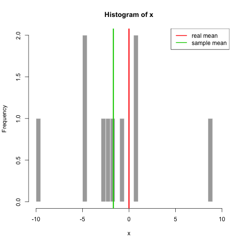
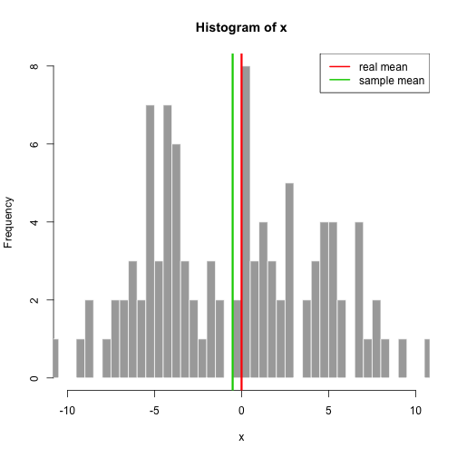

The Shiny app I prepared compares the real mean with the sample mean. It draws samples from normal distribution which parameters can be adjusted.
Roman Kierzkowski
Data Scientis
The Shiny app I prepared compares the real mean with the sample mean. It draws samples from normal distribution which parameters can be adjusted.
When you increase the variance the difference usually increases. 
When you increase the sample size the discrepancy between the means decreases. 